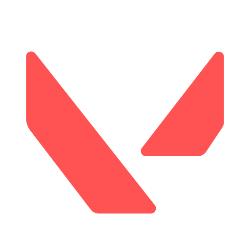

AIMTRACKER
Minha história com o Valorant começou na fase beta, em 7 de abril de 2020. Desde o primeiro momento, o jogo me cativou. Embora eu tenha experimentado outros agentes no início, foi com o Chamber que realmente me encontrei; ele se tornou o meu agente principal e com quem mais joguei, pois combinava com o meu estilo de jogo que era voltado para "picks" agressivos e oportunidade de reposicionamento caso algo dê errado, pelo fato do agente contar com o poder de teleporte. A classe Sentinela sempre foi a que me proporcionou mais conforto e confiança em minhas partidas.

Inicialmente, eu jogava Valorant mais pela diversão. Com o tempo, fiz novas amizades no jogo e, ocasionalmente, jogávamos partidas ranqueadas juntos. Com o passar do tempo, comecei a buscar desafios maiores e tive a oportunidade de participar de treinos (scrims), muitas vezes completando times com jogadores profissionais. Sempre gostei muito de treinar minha mira antes das partidas, essa imersão e a busca por evolução me levaram de um elo mais baixo, o Prata, até o Imortal, que foi o meu auge no jogo.
Além de jogar, sempre acompanhei de perto o cenário competitivo de Valorant. Um momento marcante foi ter ido ao VCT LOCK//IN, o mundial que aconteceu em São Paulo entre fevereiro e março de 2023. Foi uma experiência incrível ver tudo aquilo de perto, presenciar o momento em que o time brasileiro "LOUD" estava no seu auge e representando o Brasil da melhor forma. Para completar, tive a sorte de encontrar o Forsaken, um dos meus streamers favoritos, e registrar esse encontro.